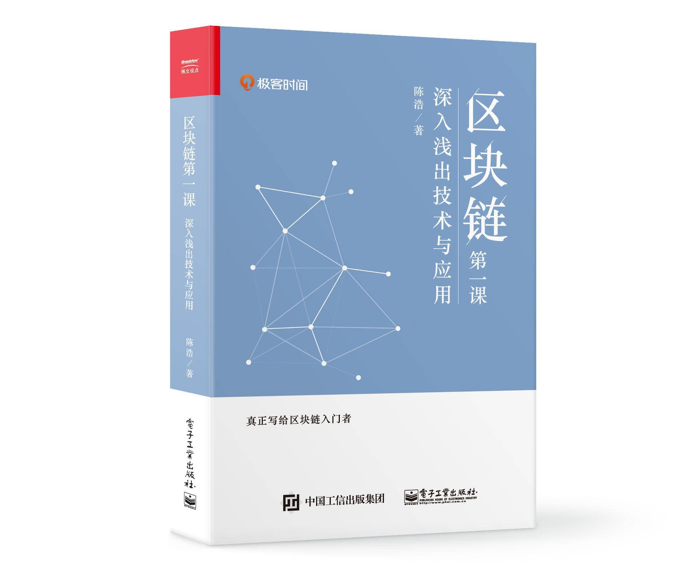

- 00 开篇词 帮你从0到1深入学习区块链技术.md.html
- 尾声篇 授人以鱼，不如授人以渔.md.html
- 新书首发《区块链第一课：深入浅出技术与应用》.md.html
- 第01讲 到底什么才是区块链？.md.html
- 第02讲 区块链到底是怎么运行的？.md.html
- 第03讲 浅说区块链共识机制.md.html
- 第04讲 区块链的应用类型.md.html
- 第05讲 如何理解数字货币？它与区块链又是什么样的关系？.md.html
- 第06讲 理解区块链之前，先上手体验一把数字货币.md.html
- 第07讲 区块链的常见误区.md.html
- 第08讲 最主流区块链项目有哪些？.md.html
- 第09讲 深入区块链技术（一）：技术基础.md.html
- 第10讲 深入区块链技术（二）：P2P网络.md.html
- 第11讲 深入区块链技术（三）：共识算法与分布式一致性算法.md.html
- 第12讲 深入区块链技术（四）：PoW共识.md.html
- 第13讲 深入区块链技术（五）：PoS共识机制.md.html
- 第14讲 深入区块链技术（六）：DPoS共识机制.md.html
- 第15讲 深入区块链技术（七）：哈希与加密算法.md.html
- 第16讲 深入区块链技术（八）： UTXO与普通账户模型.md.html
- 第17讲 去中心化与区块链交易性能.md.html
- 第18讲 智能合约与以太坊.md.html
- 第19讲 上手搭建一条自己的智能合约.md.html
- 第20讲 区块链项目详解：比特股BTS.md.html
- 第21讲 引人瞩目的区块链项目：EOS、IOTA、Cardano.md.html
- 第22讲 国内区块链项目技术一览.md.html
- 第23讲 联盟链和它的困境.md.html
- 第24讲 比特币专题（一）历史与货币.md.html
- 第25讲 比特币专题（二）：扩容之争、IFO与链上治理.md.html
- 第26讲 数字货币和数字资产.md.html
- 第27讲 弄懂数字货币交易平台（一）.md.html
- 第28讲 弄懂数字货币交易平台（二）.md.html
- 第29讲 互联网身份与区块链数字身份.md.html
- 第30讲 区块链即服务BaaS.md.html
- 第31讲 数字货币钱包服务.md.html
- 第32讲 区块链与供应链（一）.md.html
- 第33讲 区块链与供应链（二）.md.html
- 第34讲 从业区块链需要了解什么？.md.html
- 第35讲 搭建你的迷你区块链（设计篇 ）.md.html
- 第36讲 搭建你的迷你区块链（实践篇）.md.html
- 捐赠
因收到Google相关通知，网站将会择期关闭。相关通知内容
新书首发《区块链第一课：深入浅出技术与应用》
你好，我是陈浩。我的书《区块链第一课：深入浅出技术与应用》正式出版了。

最近我在“极客时间”一周年的留言里看到，有一些读者说看完专栏的2/3后，就顺利进入了区块链行业，还有读者提到这个专栏让他对区块链的认知更近了一步，深入了解了区块链的原理，并弥补了之前一个人摸索的不足。在感谢大家的认可的同时，也更坚定了我对出书的信心。
这本书是我们专栏《深入浅出区块链》纸质的加强版，它在结构上继续沿用专栏“基础—— 进阶—— 专题—— 当下—— 从业”的逻辑顺序。我们把精力更多地用在了内容的精校方面，力求为大家提供纯正的区块链技术。
《区块链第一课》的成书是目前极客时间出品的图书里耗时最长的，我们在三审三校的基础上又增加了两次深度修订，争取让读者在拿到这本书的时候能够看得懂，学得明白，用得着。
大家都知道，今年区块链经历了从全面爆发到快速遇冷的阶段，这筛去了很多急功近利的情绪，经历大浪淘沙之后的区块链，会在未来金融、商业和安全领域继续应用，并会被更多的技术人看到。
现在，《区块链第一课》已经在极客商城提前开售，作为已经订阅专栏的老朋友，除了首发优惠之外，我还给你申请了优惠码。在极客商城待付款订单中点击“使用优惠”，输入优惠码“qukuailian”，结算时可再减5元。
感谢你的支持，我们继续一路同行。

© 2019 - 2023 Liangliang Lee. Powered by gin and hexo-theme-book.